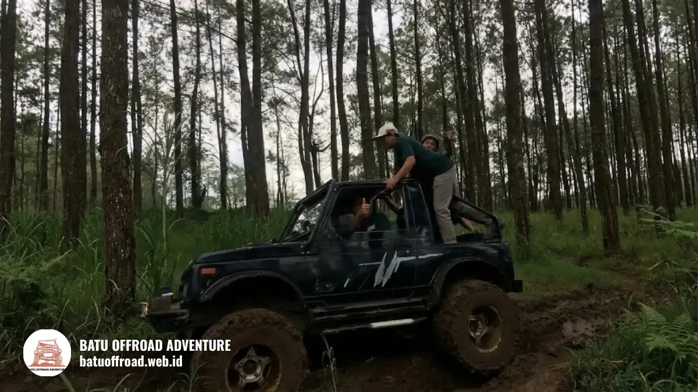

Panduan Lengkap Wisata Offroad Batu Malang Rute, Harga, dan Keseruannya
Offroad batu malang adalah aktivitas petualangan seru menggunakan jeep 4x4 untuk menjelajahi jalur menantang, berlumpur, dan berbatu di area Batu Malang, cocok untuk keluarga, grup teman, atau acara perusahaan dengan paket beragam mulai dari 2 hingga 8 jam perjalanan.
Poin Utama Panduan Offroad Batu Malang
- Offroad batu malang menawarkan sensasi petualangan ekstrem melalui jalur berlumpur dan berbatu dengan jeep 4x4 profesional.
- Biaya offroad berkisar dari paket pendek (2-3 jam) hingga paket full day dengan tambahan aktivitas seperti rafting, paintball, dan team building.
- Persiapan penting meliputi pakaian nyaman, perlindungan debu, sepatu outdoor, dan obat-obatan pribadi.
- Operator terpercaya dilengkapi driver profesional, jeep terawat, asuransi, dan fasilitas lengkap untuk keselamatan penumpang.
- Proses booking mudah melalui kontak admin, dengan fleksibilitas jadwal dan paket kustom tersedia.
Mengapa Offroad Batu Malang Wajib Masuk Daftar Liburan Anda?
Offroad batu malang memberikan pengalaman petualangan ekstrem yang menggabungkan sensasi berkendara di medan berat dengan keindahan alam Batu yang masih asri. Aktivitas ini cocok untuk segala usia dan berbagai jenis acara, mulai dari liburan keluarga hingga gathering korporat.
Menurut data riset wisata petualangan 2025, destinasi offroad di kawasan Batu Malang mengalami pertumbuhan 42 persen dalam jumlah kunjungan dibanding tahun sebelumnya, menunjukkan tingginya minat wisatawan terhadap aktivitas ini.
Keunikan offroad batu malang terletak pada kombinasi sempurna antara:
- Jalur offroad yang bervariasi, dari medan berlumpur, berbatu, hingga melintasi sungai kecil dengan keamanan terjamin.
- Pemandangan alam yang menakjubkan, termasuk perkebunan apel, hutan pinus, dan air terjun alami sepanjang perjalanan.
- Fleksibilitas paket yang dapat disesuaikan dengan durasi, anggaran, dan jenis aktivitas tambahan (rafting, paintball, team building, fun games).
- Driver dan tour guide profesional yang berpengetahuan luas tentang keindahan dan sejarah lokal Batu Malang.
- Keamanan prioritas utama dengan jeep terawat, asuransi lengkap, dan protokol keselamatan yang ketat.
Pengalaman petualangan ini tidak hanya memberikan adrenalin rush tetapi juga momen berharga untuk mempererat hubungan keluarga, memperkuat kekompakan tim di tempat kerja, atau sekadar melepas penat dari rutinitas sehari-hari.
Pilihan Rute Menantang Offroad di Batu Malang
Offroad batu malang menawarkan beberapa rute populer yang dipilih berdasarkan tingkat kesulitan, durasi, dan jenis medan yang akan dilalui. Setiap rute dirancang untuk memberikan pengalaman berbeda namun tetap aman dan terpandu profesional.
Jalur Berlumpur Coban Talun
Jalur berlumpur Coban Talun adalah rute offroad yang paling populer di Batu Malang, menampilkan medan berair dan lumpur dengan kedalaman bervariasi. Rute ini melintasi area perkebunan apel lokal dan berakhir di kawasan air terjun alami Coban Talun yang menyegarkan.
Karakteristik rute ini:
- Durasi: 2-3 jam untuk round trip
- Tingkat kesulitan: Menengah (cocok untuk pemula hingga menengah)
- Highlight utama: Medan berlumpur berlapis, crossing air kecil, pemandangan perkebunan apel, air terjun Coban Talun
- Waktu terbaik: Sepanjang tahun (puncak musim hujan memberikan medan lumpur yang lebih ekstrem)
Jalur Eksotis Hutan Pinus Gunung Welirang
Jalur eksotis hutan pinus Gunung Welirang menawarkan pengalaman offroad yang menggabungkan medan berbatu dengan pemandangan alam yang lebih serius dan memukau. Rute ini melewati hutan pinus yang lebat dengan udara sejuk dan spot foto yang sangat instagramable.
Karakteristik rute ini:
- Durasi: 3-4 jam untuk round trip (optional tambahan jam)
- Tingkat kesulitan: Menengah hingga tinggi (memerlukan pengalaman offroad minimal)
- Highlight utama: Jalur berbatu, hutan pinus eksotis, spot foto istimewa, pemandangan Gunung Welirang, udara pegunungan yang sejuk
- Waktu terbaik: Pagi hari (6-9 pagi) untuk menghindari kerumunan dan mendapatkan cahaya foto sempurna

Armada jeep 4x4 melintasi rute berlumpur dan berair di sekitar perkebunan Batu Malang.
Berapa Biaya Offroad di Batu Malang?
Biaya offroad batu malang bervariasi bergantung pada durasi trip, jenis paket, jumlah peserta, dan aktivitas tambahan yang dipilih. Berikut rincian harga umum yang berlaku di industri offroad Batu Malang per 2026.
Harga Paket Short Trip (2-3 Jam)
Paket short trip adalah pilihan terjangkau untuk wisatawan yang terbatas waktu atau ingin mencoba offroad pertama kali. Paket ini sudah termasuk:
- Armada jeep 4x4 hardtop (hardtop atau Jimny sesuai kapasitas grup)
- Driver profesional sekaligus tour guide berpengalaman
- Tiket masuk kawasan offroad (Perhutani atau area wisata terkait)
- Air mineral dan snack ringan
- Dokumentasi foto dasar
Harga berkisar: Rp 400.000 - Rp 600.000 per orang (tergantung operator dan musim), atau paket rombongan mulai dari 20 orang dengan harga spesial.
Harga Paket Medium Trip (4-5 Jam)
Paket medium trip memberikan pengalaman lebih mendalam dengan rute lebih panjang. Paket ini sudah termasuk semua fasilitas short trip ditambah:
- Makan siang di warung lokal atau rest area yang nyaman
- Dokumentasi foto dan video lebih lengkap
- Waktu istirahat cukup untuk menikmati air terjun atau spot alam lainnya
- Briefing keselamatan yang lebih detail
Harga berkisar: Rp 700.000 - Rp 950.000 per orang, atau paket rombongan 20+ orang dengan diskon signifikan.
Harga Paket Long Trip / Custom Rute (Seharian Full)
Paket full day atau custom adalah pilihan terbaik untuk pengalaman maksimal dengan kombinasi multiple rute atau aktivitas tambahan. Paket ini sudah termasuk semua fasilitas medium trip ditambah:
- Rute kustom sesuai keinginan (bisa menggabung Coban Talun + Gunung Welirang atau lokasi lain)
- Aktivitas tambahan seperti rafting, paintball, fun games, atau team building
- Makan siang dan snack berlimpah sepanjang hari
- Dokumentasi profesional lengkap (foto dan video dalam bentuk flash drive atau soft copy)
- Asuransi perjalanan dan perlengkapan keselamatan premium
Harga berkisar: Rp 1.200.000 - Rp 2.500.000 per orang untuk paket premium, atau paket rombongan (20+ orang) dengan harga group khusus Rp 800.000 - Rp 1.500.000 per orang.
Apa Saja Persiapan Sebelum Memulai Offroad?
Persiapan matang sebelum offroad batu malang adalah kunci untuk memastikan pengalaman aman, nyaman, dan maksimal. Persiapan meliputi aspek fisik, perlengkapan, dan pengetahuan dasar tentang prosedur keselamatan.
Persiapan Fisik dan Kesehatan:
- Istirahat cukup semalam sebelum hari keberangkatan untuk menjaga stamina.
- Hindari konsumsi alkohol berlebihan 24 jam sebelum trip.
- Jika memiliki riwayat kesehatan tertentu (jantung, darah tinggi, vertigo), konsultasikan dengan dokter terlebih dahulu.
- Persiapkan mental untuk menghadapi medan menantang dan sensasi ekstrem.
Perlengkapan Pakaian Wajib:
- Pakaian yang menyerap keringat (cotton atau material breathable) agar tetap nyaman meski basah.
- Jaket penahan angin atau windbreaker untuk menjaga kehangatan saat melewati air atau daerah tinggi.
- Sepatu outdoor atau sneakers berkualitas dengan grip bagus (hindari sandal atau sepatu casual biasa).
- Pakaian ganti lengkap karena pasti akan kotor dan basah selama trip.
Barang Bawaan Penting:
- Kacamata hitam, masker, atau buff untuk perlindungan dari debu dan percikan lumpur.
- Obat-obatan pribadi (antasida, vitamin, suplemen rutin Anda).
- Sunblock dengan SPF minimal 30 untuk perlindungan kulit.
- Kantong plastik tahan air untuk melindungi barang berharga (ponsel, kamera, dompet).
- Kamera action atau smartphone dengan casing waterproof untuk dokumentasi.
Testimoni dan Keseruan Selama di Jalur
Pengalaman offroad batu malang yang sesungguhnya adalah kombinasi sensasi adrenalin tinggi, keindahan alam yang menakjubkan, dan momen berkesan bersama orang-orang terkasih. Ribuan wisatawan telah merasakan pengalaman ini dan meninggalkan kenangan positif.
Keseruan yang biasanya dialami peserta:
- Sensasi mendebarkan melewati jalur berlumpur yang ekstrem dengan jeep melenceng-lenceng mengikuti medan.
- Pemandangan alam yang memukau dengan perkebunan apel hijau, hutan pinus yang asri, dan air terjun segar.
- Momen kekeluargaan dan tawa bersama dalam jeep saat menghadapi medan menantang.
- Spot foto yang sangat instagramable untuk dokumentasi pribadi.
Cara Booking dan Memilih Operator Offroad Terpercaya
Memilih operator offroad yang terpercaya adalah langkah penting untuk memastikan keamanan, kenyamanan, dan kepuasan dalam perjalanan.
Kriteria Operator Offroad Terpercaya:
- Memiliki izin operasional resmi dari pemerintah daerah dan asosiasi wisata.
- Armada jeep terawat dengan baik, rutin diservis, dan dilengkapi safety equipment standar.
- Driver bersertifikat dengan pengalaman minimal 5 tahun di jalur offroad Batu Malang.
- Asuransi perjalanan komprehensif yang melindungi peserta.
- Review positif dari peserta sebelumnya di berbagai platform.
- Harga transparan tanpa biaya tersembunyi.
- Customer service responsif dan siap menjawab pertanyaan detail sebelum booking.
Proses Booking Offroad:
- Hubungi operator pilihan melalui telepon atau WhatsApp.
- Konsultasikan kebutuhan Anda (jumlah peserta, tanggal yang diinginkan, durasi, aktivitas tambahan).
- Terima penawaran harga dan detail paket sesuai kebutuhan.
- Lakukan pembayaran deposit (biasanya 30-50 persen dari total harga).
- Konfirmasi jadwal, lokasi penjemputan, dan detail teknis lainnya.
- Terima instruksi pre-trip tentang apa yang harus disiapkan.
- Datang tepat waktu di lokasi yang telah disepakati dengan perlengkapan lengkap.
- Ikuti briefing keselamatan dari driver sebelum berangkat.
- Nikmati petualangan dan dokumentasi selama trip.
- Lakukan pembayaran pelunasan setelah trip selesai.
Kesimpulan
Offroad batu malang adalah aktivitas wisata petualangan terbaik untuk mengisi liburan dengan sensasi, keseruan, dan kenangan indah. Dengan berbagai pilihan rute, paket fleksibel, dan operator terpercaya yang mudah dihubungi, Anda dapat menyesuaikan pengalaman offroad sesuai anggaran, waktu, dan preferensi grup Anda.
Pertanyaan Umum (FAQ)
-
Berapa usia minimum untuk ikut offroad batu malang?
Umumnya usia minimum adalah 7-10 tahun, tergantung kebijakan masing-masing operator. Anak-anak di bawah usia tersebut dapat ikut namun dengan pertimbangan khusus dan mungkin perlu didampingi lebih ketat. Konsultasikan dengan operator sebelum booking. -
Apakah offroad batu malang aman untuk pemula dan keluarga dengan
anak-anak?
Ya, sangat aman. Operator profesional telah menyiapkan protokol keselamatan ketat termasuk perlengkapan safety standar, driver berpengalaman, dan jeep yang terawat. Untuk pemula, Anda dapat memilih rute easy atau short trip terlebih dahulu. -
Bagaimana jika tidak bisa berenang? Apakah ada jalur yang tidak melintasi
air?
Ya, ada rute alternatif yang tidak melintasi air atau hanya melewati air dangkal. Hubungi operator untuk menanyakan opsi ini. Namun, crossover air adalah bagian dari pengalaman offroad, jadi tidak perlu khawatir karena jeep dirancang waterproof dan driver berpengalaman menangani medan basah. -
Apakah ada paket untuk grup besar atau rombongan perusahaan?
Tentu saja. Operator menyediakan paket khusus rombongan dengan harga group yang lebih terjangkau. Paket dapat disesuaikan dengan kebutuhan, mulai dari offroad murni hingga kombinasi dengan team building, fun games, atau paintball. Semakin banyak peserta, biasanya semakin besar diskonnya. -
Bagaimana jika cuaca buruk atau hujan lebat di hari H?
Offroad dapat dilakukan dalam kondisi hujan, bahkan medan menjadi lebih ekstrem dan menyenangkan. Namun, jika hujan sangat lebat hingga mengancam keselamatan, operator akan memberikan opsi postpone atau refund. Selalu ada klausul cuaca dalam perjanjian booking, jadi pastikan membaca syarat dan ketentuan dengan cermat.
Takeaway Utama
Setiap paket offroad batu malang dirancang dengan standar keselamatan dan kenyamanan tinggi, dengan isi dan fasilitas yang disesuaikan durasi dan jenis paket. Pilih paket yang sesuai kebutuhan Anda, dan hubungi operator langsung untuk penawaran harga dan paket custom yang sesuai budget Anda.